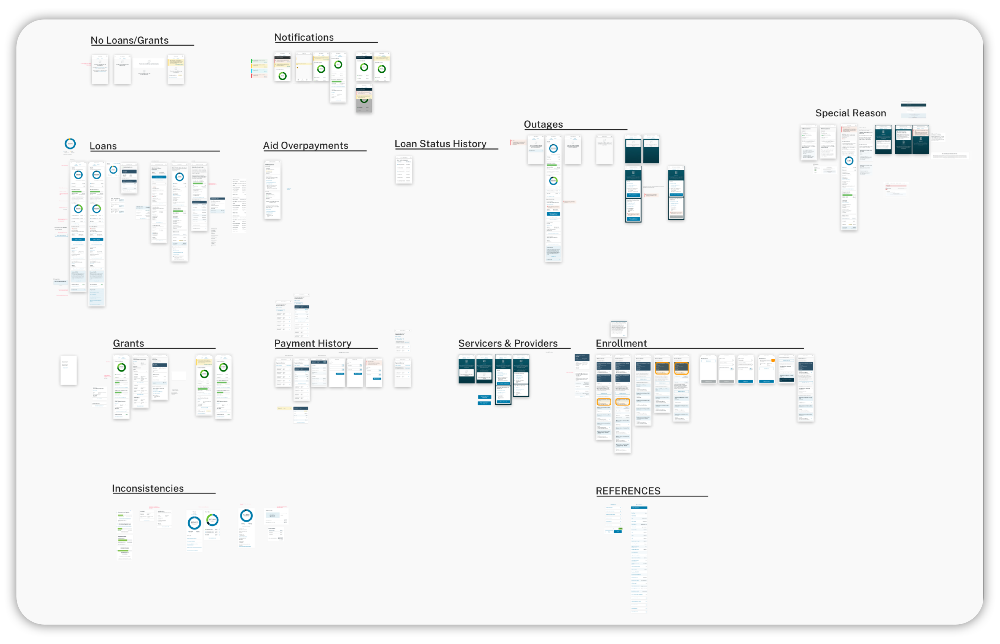
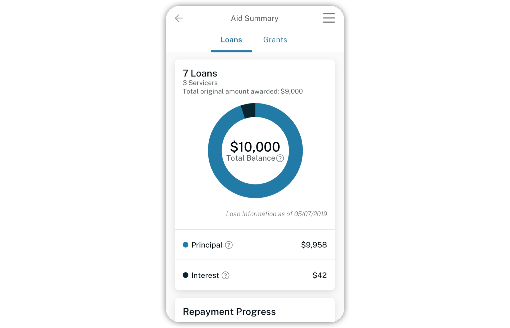
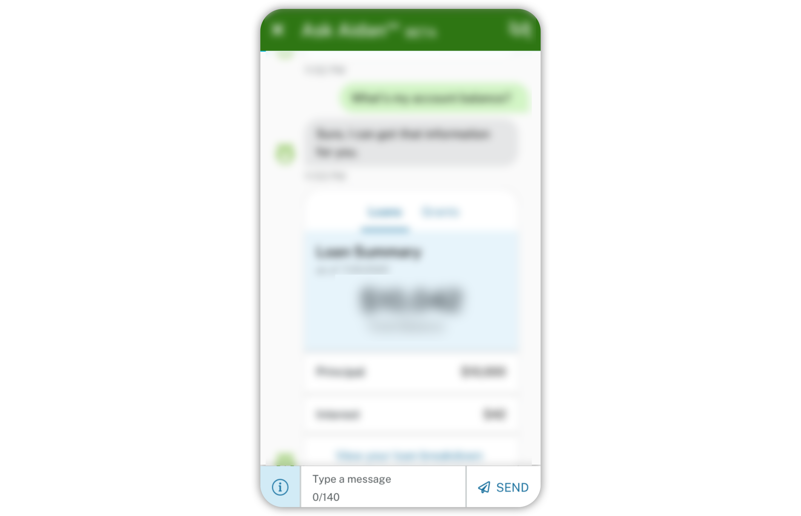
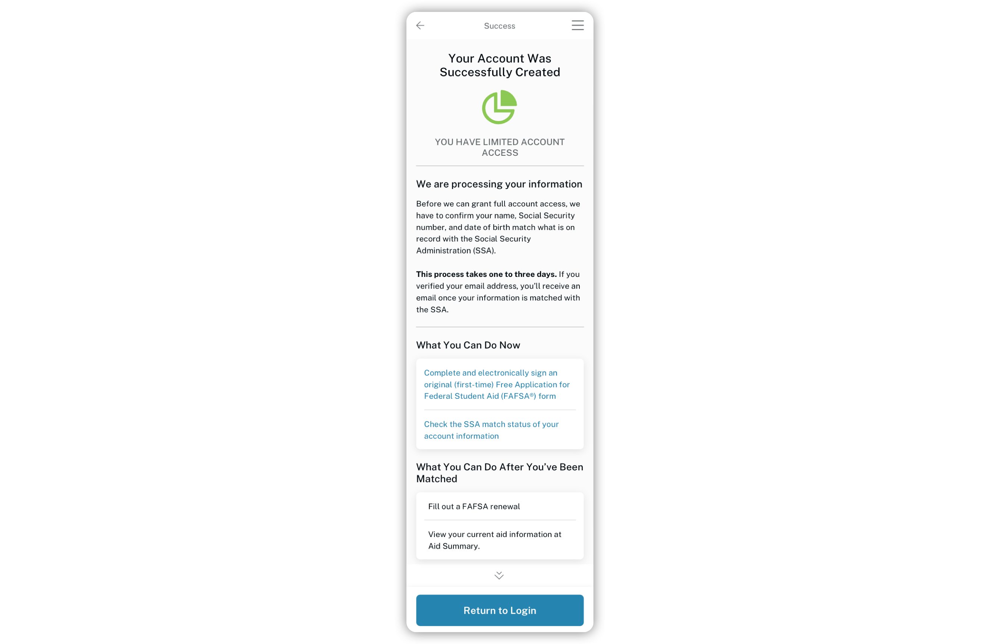

Due to the contents of the project, I cannot provide specificities in my descriptions or accompanied images.
Project Role
UX Designer Design Researcher
Mission
Design the core FSA website’s fuctionailties into a standalone app experience.
UX Design
My primary responsibility was to translate existing web designs into a native app, supporting Android and iOS. Microinterations were rethought and redesigned to follow best practices for a mobile-first touch interface. This alternate perspective, where screen real estate is at a premium, allowed us to reconsider and simplify desktop web designs.




Research
Whenever possible, we pushed our client to support usability testing to evaluate the efficacy of our designs. I built a usability testing guide, led virtual interviews, and synthesized the aggregated data into actionable takeaways and insights for key stakeholders.
Design System
As one of the first designers on the mobile app, I contributed to fleshing out the mobile app design system as it was translated from the orignial web design system. With different platforms and use cases comes new directions to take the design system. Over time, I identified areas of friction when translating to the build, and helped realign the design system to technical feasability alongside developers.